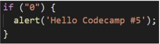
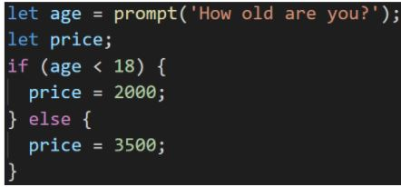

-
Browser จะโชว์ข้อความ “Hello Codecamp #5” ไหม

โชว์
-
ใช้ if else ในการเขียนถามชื่อของคุณ
- ถ้าตอบถูกให้แสดงคำว่า “เก่งมาก”
- ถ้าตอบผิดให้แสดงคำว่า “คุณไม่รู้จักชื่อฉัน”
-
ใช้ prompt ในการรับคะแนนมาคำนวณเกรด
ถ้าคะแนน มากกว่าเท่ากับ 80 ได้ A
ถ้าคะแนน อยู่ระหว่าง 70 - 79 ได้ B
ถ้าคะแนน อยู่ระหว่าง 60 - 69 ได้ C
ถ้าคะแนน อยู่ระหว่าง 50 - 59 ได้ D
ถ้าคะแนน น้อยกว่า 50 ได้ F
-
เปลี่ยน if-else ข้างล่างในอยู่ในรูปของ Ternary Operators

let age = prompt('How old are you?');
let price = (age < 18) ? 2000 : 3500;